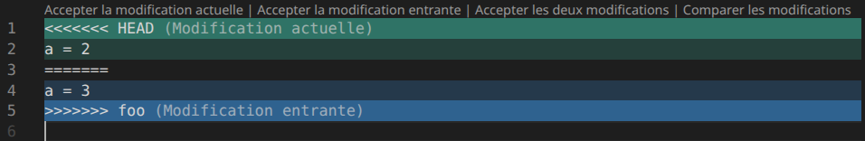
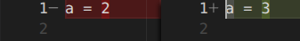

Gestionnaire de versions (Git)
Introduction
Motivation
Lorsque vous travaillez sur un projet, vous vous retrouvez facilement à avoir différentes "versions" du projet et de ses fichiers. Vous pouvez avoir des fichiers envoyés par mail ou par Discord, différentes archives de votre projet à gauche et à droite, des versions locales différentes entre les différents membres de votre groupe, etc. Très rapidement, le projet devient chaotique, il est alors difficile d'en retrouver (ou d'en reconstituer) la dernière version.
Les gestionnaires de versions permettent de gérer les versions d'un projet tout en apportant diverses fonctionnalités :
- visualisation, parcours, et manipulation de l'historique du projet/des fichiers ;
- travailler simultanément sur différentes versions ;
- travail collaboratif (e.g. intégrer le travail des autres) ;
- diverses automatisations (vérifications, tests, déploiements, etc.) ;
- interactions avec d'autres outils et environments (e.g. issues, reviews).
💡 Dans le cadre de ce module, nous utiliserons le gestionnaire de version Git (connard en argot britanique).
Concepts de base
Un dépôt git (git repository) est un simple dossier contenant les fichiers actuels du projet (appelé arborescence de travail ou worktree), ainsi qu'un sous-dossier contenant les méta-données du dépôt (e.g. configuration, historique, etc) :
💡 Les fichiers du projet sont manipulés directement dans le worktree, de la même manière que n'importe quel autre fichier.
Le dossier contient notamment les commits du projet, représentant chacun un instantané du projet (i.e. son état à un instant t). Chaque commit référençant le commit précédent (i.e. l'état précédent), on obtient alors une liste chaînée représentant l'historique du projet (i.e. ses états successifs) :
💡 Le worktree correspond ainsi au commit actuel du projet, complété par les modifications encore non "enregistrées".
Manipuler un dépôt git
Bien que des interfaces graphiques existent, les dépôts git sont usuellement manipulés via des lignes de commande. Ces dernières sont de la forme , e.g. :
La documentation de chaque commande git est accessible via ( pour la version courte) :
Création d'une version
Avec git, la création d'un instantané (commit) s'effectue en 2 temps :
- sa préparation : en regroupant l'ensemble des modifications à intégrer au prochain commit.
- son enregistrement : ajoute un nouveau commit à l'historique du projet.
Préparation du commit
L'index (ou staging) contient l'ensemble des modifications à intégrer au prochain commit. Il peut être vu comme un commit en préparation. La commande suivante permet d'ajouter la version actuelle des fichiers à l'index :
💡 liste le contenu de l'index, les modifications non-ajoutées à l'index, et les nouveaux fichiers :
Exclusion de fichiers
Certains fichiers ne doivent pas être ajoutés au dépôt, que ce soit des fichiers générés pour ne pas polluer le dépôt, ou des secrets pour des raisons de sécurité. Or ajoutera l'ensemble des fichiers du projet à l'index, et donc au futur commit.
Pour éviter cela, on défini une liste de fichiers à ignorer grâce au fichier , e.g. :
⚠ Toute modification de ce fichier n'est pris en compte qu'après son rajout à l'index.
Il est ainsi important de structurer correctement son projet, pas seulement pour mieux s'y retrouver, mais aussi pour clairement définir les fichiers et dossiers qui seront inclus aux commits. Par exemple :
Création du commit
Une fois préparé, la création du commit s'effectue simplement via la commande :
💡 est la description associée au commit, dont la première ligne sert de titre au commit.
💡 est l'identifiant du commit (le hash du commit).
💡 est l'identifiant du commit (le hash du commit).
Le commit ainsi créé comporte alors :
- un identifiant (hash)
- l'identifiant du commit précédent
- un auteur et une date de création
- un message
- un instantané du projet (mais stocké de manière optimisé).
Le commit est alors ajouté à l'historique du projet qu'on peut visualiser via :
Les bons principes
Un commit doit contenir un ensemble atomique et cohérent de modifications, e.g. :
- l'ajout d'une nouvelle (sous-)fonctionnalité ;
- la correction d'un bug ;
- une modification de la documentation/tests ;
- etc.
⚠ Il est important que le commit ai un nom court mais explicite afin de faciliter la lecture de l'historique. Dans certains projets Open Source, les noms de commits suivent un formatage très précis, permettant d'automatiser certaines opérations.
Il est par exemple recommandé de préfixer ses noms de commit par :
- ajoute une fonctionnalité.
- corrige un bug.
- modifie les tests.
- refactor du code.
- met à jour la documentation.
- modifie le processus de construction du projet.
💡 De la même manière qu'il faut sauvegarder et tester votre code très régulièrement, en procédant par itérations successives, il est important de créer des commits le plus régulièrement possible afin d'exploiter toute la puissance de Git.
Organisation des versions
Git distingue 2 types de versions :
- les tags : version figée, correspond à un état précis du projet (e.g. ).
- les branches : version "évolutive", correspond à une chaîne de commits (e.g. ).
Ces deux types de versions sont concrètement un nom qu'on associe à un commit donné. Il est alors possible de faire référence à un commit par un nom au lieu de son identifiant (hash), ce qui est plus simple à retenir et à utiliser. Cela permet aussi de pouvoir lister les différentes versions du projet :
Les tags
Les tags suivant usuellement le format suivant (e.g. ), avec des nombres qui s'incrémentent à chaque nouvelle version :
- : pour des corrections mineures (e.g. correction de bug).
- : pour des ajouts de fonctionnalités.
- : pour des changements importants qui cassent la rétro-compatibilités.
💡 Il est aussi possible de trouver des tags au format , indiquant la date de la distribution, e.g. pour janvier 2026. Cela permet alors aux utilisateurs d'aisément constater l'obsolescence de leur version.
Les tags permettent ainsi d'aisément communiquer sur la version du projet déployée à un endroit donné. Par exemple, si un utilisateur a un bug sur la version , les développeurs savent directement de quelle version il est question, et peuvent facilement la retrouver.
Dans les systèmes de déploiement continue, on va reconstruire le projet régulièrement (e.g. chaque nuit) afin de vérifier que le projet est toujours fonctionnel. Les versions sont alors usuellement de la forme , et les tags supprimés au bout d'un certain temps.
Dans les systèmes d'intégration continue, on va régulièrement fusionner les modifications apportées par les différents contributeurs du projet. On peut alors désigner les versions par , par exemple . Cela permet alors de désigner un commit précis, tout en informant sur la version actuelle. Ces versions font rarement l'objet de tags git.
Les branches
Les branches représentent une chaîne de commit. Usuellement, la branche principale créée à la création du dépôt git est nommée ou . Elle correspond à la version du projet actuellement distribuée (i.e. la dernière version stable). Ainsi, lorsque vous créez ensuite un commit, ce dernier est rajouté à la branche actuelle.
Avoir plusieurs branches permet de travailler sur de futures versions, fonctionnalités, ou correctifs, sans impacter la branche principale, ce afin d'en garantir la stabilité. En effet, un travail en cours peut temporairement introduire bugs et régressions. Il y a donc nécessité de pouvoir travailler sur de nouvelles choses de manière "isolée", tout en étant capable d'apporter des correctifs à la branche principale.
On peut alors développer chaque fonctionnalité (feature), correctif (bugfix), ou expérimentation (experiment) dans sa propre branche dédiée. Une fois le travail terminé, on peut ensuite fusionner les modifications d'une branche sur la branche principale.
Chaque version (release), ou future version (release candidate) du projet peut aussi avoir sa propre branche (e.g. , ). Cela permet de préparer une future version par l'assemblage de nouvelles fonctionnalités, d'effectuer divers tests et vérifications, avant qu'elle ne devienne la nouvelle version stable. Cela permet aussi d'être capable d'apporter des correctifs à d'anciennes versions encore supportées (e.g. , , ).
À ces différentes étapes de tests et de validations peuvent aussi correspondre à un environnement et une branche dédiée. Ainsi à chaque modification de la branche le projet peut être automatiquement déployé sur l'environnement correspondant, e.g. serveurs :
- testing : tests sur l'environnement de développement.
- staging : tests sur l'environnement de production.
- unstable : tests utilisateurs (≈ bêta).
💡 Il est important de bien nommer ses branches afin de pouvoir plus facilement les lister par la suite :
- : nouvelle fonctionnalité.
- : correctif.
- : branche temporaire.
- : branche personnelle.
Changer de branche
Comme nous l'avons vu précédemment, le worktree correspond au "commit actuel du projet". Pour être plus précis, il correspond à qui pointe soit sur une branche, soit sur un commit. Si pointe sur une branche, les commits effectués par la suite sont ajoutés à la branche.
⚠ Si pointe sur un commit, est alors dit "détaché". Les commits effectués par la suite sont dits "orphelins". Ces commits pourraient être supprimés au bout de 30 jours s'ils ne sont pas rajouté à une branche.
La commande permet de faire pointer sur , qui peut être :
- un nom de branche.
- un identifiant de commit ou un tag (détaché).
- : le -ième commit précédent , e.g. (détaché).
- : le -ième parent de , si le commit a plusieurs parents (détaché).
💡 permet de créer la branche à partir du commit actuel ().
💡 Formatter le nom des branches permet de les lister plus facilement par la suite (e.g. ).
💡 Formatter le nom des branches permet de les lister plus facilement par la suite (e.g. ).
Les arborescences de travail
Il arrive qu'on travaille sur plusieurs branches en même temps. Que soit parce qu'on travaille sur une tâche donnée (e.g. une nouvelle fonctionnalité) quand une tâche plus importante/urgente survient (e.g. correction d'un bug). Ou tout simplement parce qu'on souhaite comparer la version sur laquelle on travaille avec une version antérieure, e.g. pour en comparer le code, le comportement, ou les résultats.
Passer alternativement d'une branche à l'autre avec est peu pratique, sachant que les dernières modifications doivent être "enregistrées" pour que git autorise le basculement. Or, les commits doivent être un ensemble atomique et cohérents de modifications. On ne souhaite pas créer un commit juste pour pouvoir changer de branche.
Heureusement, il est possible plusieurs worktree, qui auront leur propre et index :
💡 Il est possible de regrouper le dépôt et les worktree au sein d'un même dossier. Pour cela on crée un dépôt nu (bare repository) , en clonant un dépôt non-vide. Il est alors possible d'ajouter des worktree dans ce dossier (e.g. ). Prenez cependant garde à bien utiliser des noms de dossiers explicites pour les worktree (e.g. le nom de la branche).
💡 permet d'afficher la liste des worktree du dépôt.
Fusion de branches
Nous travaillons donc sur une fonctionnalité foo, dans une branche feature/foo. Une fois le travail terminé, testé, validé, nous souhaitons l'inclure dans la branche principale master. C'est à dire appliquer les modifications de feature/foo à master.
Pour cela on utilise la commande afin d'ajouter les modifications de à la branche courante. Un commit pointant sur le dernier commits des 2 branches, et sera ajouté à la branche courante. Ce commit aura donc 2 parents.
Il arrive que git échoue à fusionner les modifications des 2 branches, notamment lorsqu'un même fichier a été modifié sur les 2 branches. Git modifiera alors les parties des fichiers ayant un conflit de sorte à afficher les deux versions :
💡 Durant le merge, vous pouvez consulter la version originale de la branche courante en utilisant .
Vous devrez ensuite modifier chaque fichier afin de choisir la version que vous souhaitez garder. Pour cela vous pouvez soit le faire à la main, soit utiliser , e.g. en l'utilisant avec VSCode :

💡 VSCode, vous permettra de comparer les deux versions, et de naviguer parmi les différents conflits :

Une fois les conflits résolus, il ne vous restera plus qu'à ajouter les fichiers à l'index, puis à créer un nouveau commit.
💡 Une fois les modifications de la branche de travail ajoutées à la branche principale, vous pouvez "archiver" la branche de travail. Cela permet d'éviter de polluer votre liste de branches avec des branches "non-actives". Pour cela il suffit d'ajouter un tag (e.g. ) au dernier commit de la branche, puis de supprimer cette dernière.
Travail collaboratif
Usuellement, chaque développeur a, sur son poste de travail, son propre dépôt git local qu'il synchronise avec un dépôt distant (remote) central (e.g. sur Github, Gitlab, etc). Ainsi chaque développeur peut envoyer ses modifications au dépôt distant, que les autres développeurs pourront ensuite récupérer sur leur propre dépôt local.
Chaque développeur va ainsi cloner localement le dépôt distant :
Pour ensuite pouvoir récupérer (pull) ou envoyer (push) les modifications de la branche courante :
💡 Si le dépôt a été créé localement (avec ), il faudra lui indiquer le dépôt distant (remote) :
💡 Si la branche a été créée localement, il pourra être nécessaire d'indiquer la branche distante :
Éviter les conflits
Lorsque que la branche locale et la branche distante contiennent chacune de nouvelles modifications, il arrive que les opérations de synchronisations (pull/push) échoues. On va donc essayer, autant que possible, d'éviter ce genre de conflits. Par exemple, en récupérant systématiquement, et avant toutes opérations, les modifications distantes, ce afin de s'assurer de travailler sur la dernière version de la branche.
Il est aussi recommandé d'effectuer son travail sur une branche personnelle (potentiellement locale et temporaire),
e.g. , puis de ne la fusionner sur une branche partagée qu'une fois le travail terminé :
e.g. , puis de ne la fusionner sur une branche partagée qu'une fois le travail terminé :
💡 Avec le commit alors créé ne référencera pas la branche personnelle, ce afin d'éviter de polluer de branches temporaires, l'historique ainsi que le dépôt distant.
Si la synchronisation échoue du fait de nouveaux commits sur la branche locale et distante ; et que vous souhaitiez conserver un historique linéaire, i.e. sans commit de merge, vous pouvez utiliser la commande . Une fois les conflits résolus, vous pourrez utiliser pour poursuivre.
💡 En cas de conflits, vous pourrez retrouver les versions originelles de la branche locale et de la branche distante dans et .
Usages avancés
Revenir en arrière
Il arrive qu'il soit nécessaire de "revenir en arrière" pour différentes raisons :
- une erreur de manipulation.
- une impasse lors d'une expérimentation.
- le projet est cassé, impossible à réparer.
- une regression a été introduite.
De manière triviale, vous pouvez revenir à un état antérieur de votre projet avec un simple puis créer une nouvelle branche. Voire tout simplement abandonner la branche sur laquelle vous travailliez.
Pour des actions plus complexes les commandes suivantes sont utilisées :
- : restaure les fichiers
- du worktree (, par défaut) et/ou de l'index ().
- à partir du commit (, par défaut).
- : déplace (ainsi que la branche courante) sur , vide l'index.
- : mettre aussi à jour le worktree.
- : crée un commit annulant les commits spécifiés.
💡 Vous pouvez éditer le dernier d'une branche avec , permettant ainsi de lui ajouter/retirer un fichier.
⚠ Si les commits ont déjà été poussé sur la branche distante, il ne faut surtout pas les ! En effet, cela posera des problèmes de synchronisations avec la branche distante et les autres dépôts locaux. Dans ce cas, il vaut mieux utiliser afin d'expliciter l'annulation des commits.
Le problème des secrets
Votre dépôt peut contenir des secrets (e.g. mots de passe, tokens, etc), qu'on ne souhaite évidemment pas divulguer sur le dépôt distant. Pour éviter cela on va ainsi regrouper ces secrets dans des fichiers dédiés, qu'on ajoutera au afin de s'assurer qu'ils ne soient pas inclus dans un commit.
Ainsi, ces secrets devront être renseignés localement par chaque contributeur. Il est alors recommandé de fournir un squelette, afin de faciliter le remplissage de ces fichiers, e.g. :
⚠ Si vous poussez des secrets sur le dépôt distant, il convient de partir du principe qu'ils ne le sont plus, et de les changer (e.g. changer son mot de passe). Si vous souhaitez les faire disparaître du dépôt distant vous pouvez utiliser l'outil . Attention, cela ne supprimera pas les secrets sur les dépôts locaux, qui devront forcer la synchronisation pour se mettre à jour.
Déboguer
Comparer deux versions
Il est fréquent de vouloir comparer deux versions entre elles afin de comprendre ce qui les distingue. Par exemple, afficher les différences entre une version fonctionnelle et une version boguée pour mieux en localiser le bug. Il est ainsi possible de comparer le code, ou la liste des commits, de deux versions différentes :
💡 Par défaut, compare avec le worktree si n'est pas précisé.
💡 permet d'effectuer une comparaison mots à mots au lieu de lignes à lignes.
💡 permet d'effectuer une comparaison mots à mots au lieu de lignes à lignes.
Identifier l'origine du bug
Lorsqu'on corrige un bug, il peut être utile d'identifier le commit l'ayant introduit. En effet, cela permettra d'identifier les modifications à l'origine du bug, ainsi que d'identifier les branches probablement impactées par ce bug.
Pour cela on peut utiliser qui permettra de rechercher le commit fautif par recherche récursive :
Démarrer la recherche :
Indiquer si le commit actuellement testé a le bug :
💡 Il est aussi possible de fournir un script afin de valider automatiquement les commits, ce afin d'en automatiser la recherche. C'est une des raisons pour lesquelles il est intéressant d'avoir un test/script minimal reproduisant le bug. Le script sera ainsi automatiquement appelé par , facilitant grandement la recherche :
💡 est l'une des raisons pour lesquelles on essaye de faire en sorte que chaque commit d'une branche (hors branches personnelles, wip, expérimentales, etc.) corresponde à une version fonctionnelle du projet.
Lorsque le commit est identifié, on peut alors en afficher le contenu, notamment les modifications qu'il a introduit :
Identifier l'origine de lignes de code
Il arrive aussi qu'on souhaite identifier l'origine de lignes de code données, e.g. pour :
- avoir plus d'indications quant à leur raison d'être (en en contactant l'auteur, ou en lisant la description du commit).
- dans le cas d'un bug, identifier le commit l'ayant introduit.
La commande permet d'afficher, pour chaque ligne, le commit les ayant introduit :
Config
La configuration de git s'effectue par le biais de la commande suivante :
.
Par défaut, la configuration ne sera effective que pour le dépôt local actuel. permettra d'appliquer la configuration à l'ensemble des dépôts locaux de l'utilisateur.
Par défaut, la configuration ne sera effective que pour le dépôt local actuel. permettra d'appliquer la configuration à l'ensemble des dépôts locaux de l'utilisateur.
Ci-dessous quelques exemples de configurations utiles :
| Propriété | Valeur | Description |
|---|---|---|
| Le nom d'auteur à ajouter aux commits. | ||
| L'email d'auteur à ajouter aux commits. | ||
| Créer un alias git. | ||
| Ne pas polluer la sortie des commandes avec des conseils. | ||
| Créer la branche distante si elle n'existe pas lors d'un push. | ||
| Par défaut utiliser rebase lors d'un pull (au lieu de merge). | ||
| Utiliser mergetool avec VSCode. | ||
Alias Git
Les alias Git sont analogues à des alias Shell, et s'utilisent ainsi : . Par exemple :
Il est ainsi encouragé de créer des alias lorsqu'on effectue régulièrement les mêmes commandes git. Par exemple, au sein de ce support, la commande ci-dessous a été utilisée pour présenter les logs :
Vous vous doutez ainsi bien qu'on ne va pas s'amuser à réécrire une telle commande à la main à chaque fois qu'on souhaite afficher l'historique.